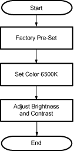

Operating Documentation
Direction 2378260-800, Rev# 10
GOC3 Service Methods (Adv)
Operating Documentation |
| Required Persons | Preliminary Reqs | Procedure | Finalization |
|---|---|---|---|
| 1 |
This module provides the basic information and procedures needed to set up and adjust the monitors on a LightSpeed scanner. Two models of monitors are being used, and the system you are working on may be equipped with either one. Check the model number on the rear of the monitor to determine which of the following procedures to use.
Illustration 1: Monitor Setup Flowchart

| Last Revised: | December 2003 |
| Item | Qty | Effectivity | Part# | Manufacturer | |
|---|---|---|---|---|---|
| Sony Service Manual (located in monitor box) | 1 | - | - | - | |
| Condition | Reference | Eff |
|---|---|---|
This procedure is required for New Monitors Only. | - | - |
If you are not on the Service Desktop, click on the [Service Desktop] icon, .
Click on the [Image Quality] icon, .
Select [INSTALL SMPTE IMAGE] and wait approximately 3-4 minutes for SMPTE image to install. When the installation is complete, the following message is displayed:
SMPTE and QA images have been successfully copied.
Press [Enter] to exit the Service Desktop.
Click the [IMAGEWORKS] icon,  .
.
Display the SMPTE pattern. Use the browser to select Exam 1000, which contains the SMPTE pattern, and enlarge the image to full screen display.
Select Viewer.
Select 1:1 format.
Increase the monitor’s contrast to maximum.
| NOTE: | Adjust monitor contrast until the operator sees the anatomical structure (window raster) |
Increase the Brightness to maximum.
Decrease the Brightness, until the raster just fades into, and matches, the monitor screen background. At this point, the 5% and 95% patches should be just visible.
If additional tweaking is required to attempt to match the monitor image to the filmed image, use only the brightness control.
If the CRT image exhibits any tearing or smearing of the alphanumeric characters, then reduce the contrast setting slightly until the tearing/smearing is just eliminated. The optimum setting for contrast is the highest setting that does not cause tearing/smearing of the alphanumeric characters.
You should always finish up by displaying and filming images of anatomy (typical heads and bodies), and asking the technologist to compare the CRT image to the film image.
To set up the text (left) monitor:
No finalization required.